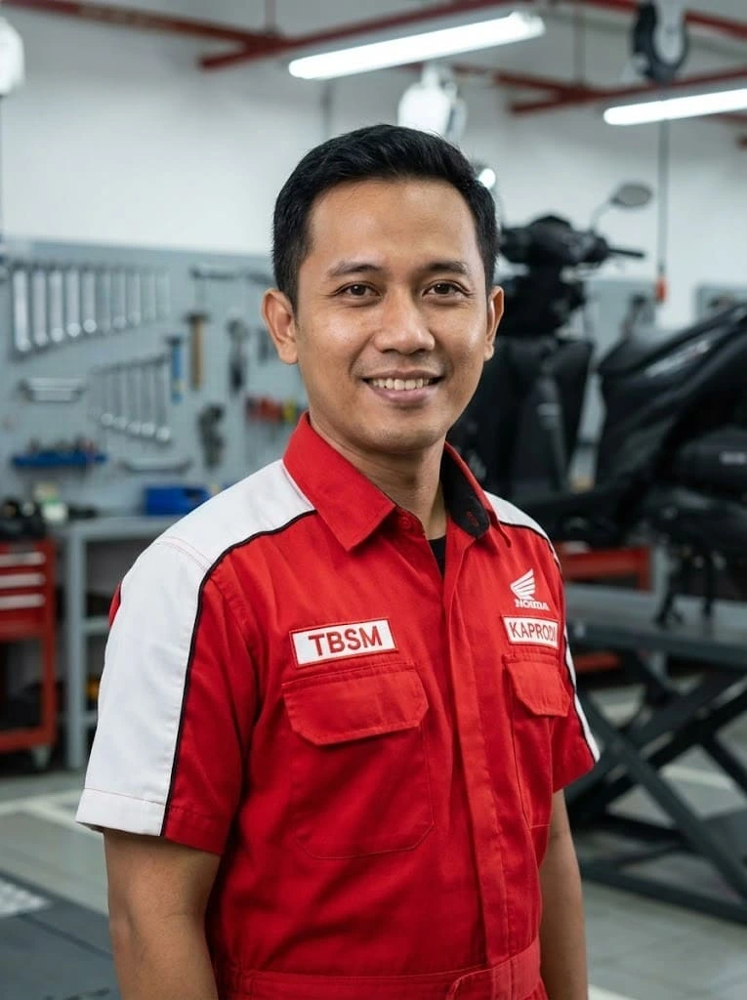

Direktori Guru & Staf
- Semua
- Pimpinan
- Kaprodi Jurusan
- Guru Umum
- Staf TU

Dr. Andi Wijaya, M.Pd
Kepala SekolahDrs. Budi Hartono
Waka Kurikulum
Siti Aminah, S.Kom
Kaprodi RPL
Budi Santoso, S.Sn
Kaprodi DKV
Rahmat Hidayat, M.T
Kaprodi TKJ
Ir. Ratna Sari
Kaprodi APHP
Hendra Gunawan, S.T
Kaprodi TPM
Dedi Suherman, S.Pd
Kaprodi TKR

Ahmad Fauzi, S.T
Kaprodi TBSMLinda Permata, S.E
Kaprodi OTKP
Dra. Sri Wahyuni
Kaprodi AKLRiko Pratama, S.M
Kaprodi BDPSiska Melati, S.Sn
Kaprodi Tata BusanaBayu Nugraha, S.Par
Kaprodi PerhotelanJessica Putri, S.Pd
Guru Bahasa Inggris